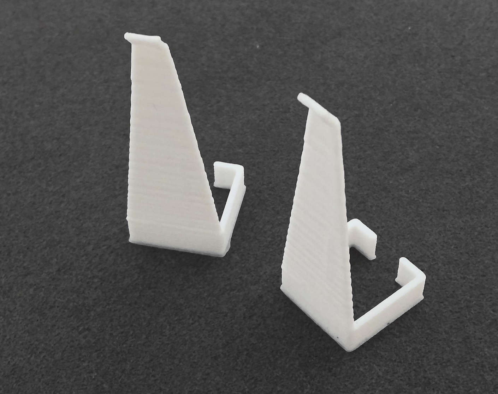

ストーリーボード・スケッチ
作った理由
時々、細かいものを掴むことなどに優れているピンセットでもうまく使いこなせないことがあります。
もっと使いやすくするためには、、と考えたときに、本物の指のように使えるピンセットがあったら便利なのでは？と思い指型ピンセットを作りました。
ストーリーボードにもあるように、最初は見た目も本物の指になっているピンセットを考えました。
しかし、指を覆う形にするのに今回使う素材では固すぎたため、最終的に指にはめる形となりました。
指をはめる部分は完全に繋げないことで柔軟性を持たせ、色々な指のサイズに対応できるようにしました。
完成品

最初に作ったのは、スケッチの左側のサイズのピンセットです。
でかすぎた！！指二本でぴったりくらいのサイズ感になってしまいました。
そして、サイズを調整して再びプリント。次は指の円周を測り(約6cm)、一辺の長さを半分(1.5cm)にしました。
いい感じの大きさになりました。